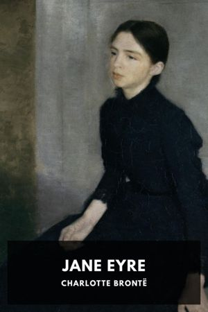
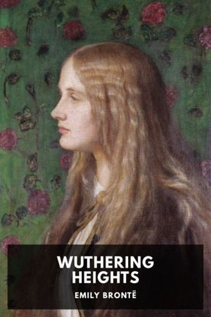
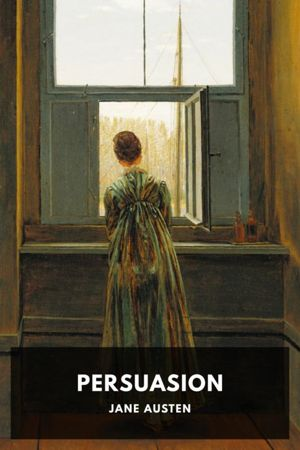
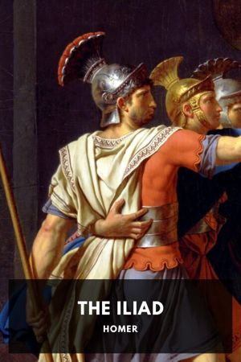

Middlemarch
George Eliot
George Eliot
 Mrs. DallowayVirginia WoolfOn your Reading List
Mrs. DallowayVirginia WoolfOn your Reading List Moral Letters to LuciliusSenecaStoic letters, like Meditations
Moral Letters to LuciliusSenecaStoic letters, like Meditations The Brothers KaramazovFyodor DostoevskyA Russian novel, like Anna Karenina
The Brothers KaramazovFyodor DostoevskyA Russian novel, like Anna Karenina
Jane EyreCharlotte BrontëOn your Reading List
Wuthering HeightsEmily BrontëIn your Gothic collection
PersuasionJane AustenAusten, after Pride and Prejudice The IdiotFyodor DostoevskyIn your Russian novels collection
The IdiotFyodor DostoevskyIn your Russian novels collection DiscoursesEpictetusIn your Stoics collection
DiscoursesEpictetusIn your Stoics collection
The IliadHomerIn your Poetry & drama collection To the LighthouseVirginia WoolfWoolf, like Mrs. Dalloway
To the LighthouseVirginia WoolfWoolf, like Mrs. DallowayMoby Dick · Herman Melville
Mock state:ReadyWritingUnavailableToo early
Up to Chapter 23 · 12% · where you stopped 12 days ago
Ishmael, a restless schoolteacher who goes to sea whenever he feels low, leaves Manhattan for New Bedford, meaning to sign on to a whaling voyage out of Nantucket.
Short of money, he shares a bed at the Spouter-Inn with Queequeg, a tattooed harpooneer from the South Seas. Their alarming first night turns into a close friendship, and the two travel to Nantucket together.
Before they leave, Ishmael hears Father Mapple’s sermon on Jonah, delivered from a pulpit built like a ship’s bow.
In Nantucket, Ishmael signs them both on to the Pequod, owned by the old Quakers Peleg and Bildad. Its captain, Ahab, has not been seen: he is said to have lost a leg to a whale and to be keeping to his cabin. A ragged stranger, Elijah, hints at trouble ahead.
The Pequod sails on a cold Christmas Day. The last thing you read was a short tribute to Bulkington, a sailor just back from four years at sea who has shipped out again at once.
Written by AI from the book’s text up to your place, so it won’t spoil what comes next. It can get details wrong.
Moby Dick · Herman Melville
Mock state:ReadyWritingUnavailableToo early
Up to Chapter 23 · 12%
Writing a recap of chapters 1 to 23. This takes a few seconds.
Moby Dick · Herman Melville
Mock state:ReadyWritingUnavailableToo early
Up to Chapter 23 · 12%
Couldn’t write a recap right now. You’re offline, and recaps need a connection.
It will be ready next time you open Moby Dick online. You can keep reading meanwhile.
Moby Dick · Herman Melville
Mock state:ReadyWritingUnavailableToo early
You’re 3% into the book
Not much to recap yet. You’ve read the opening pages; a recap starts making sense after about 5%.